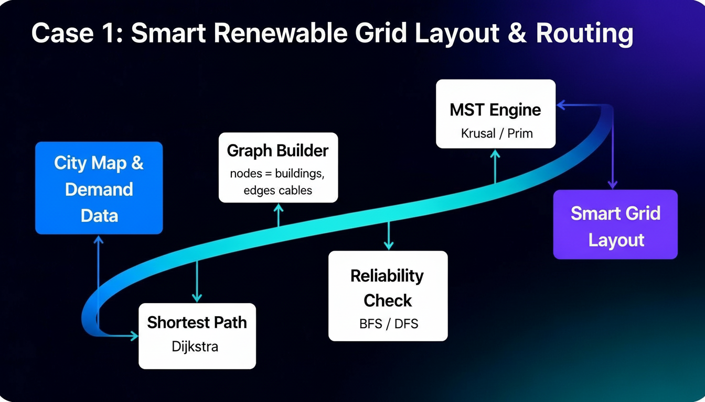
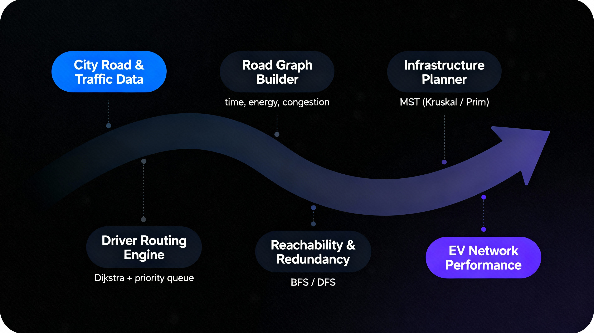
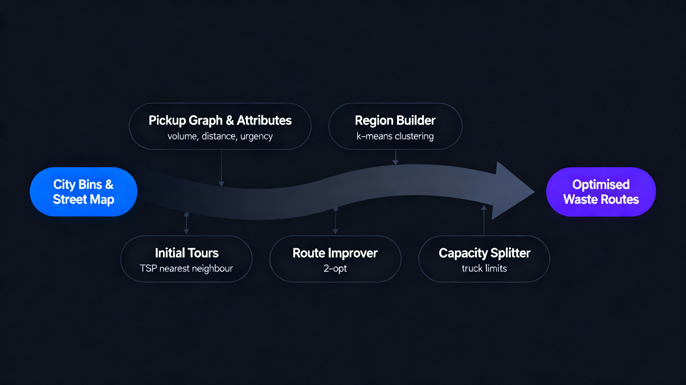
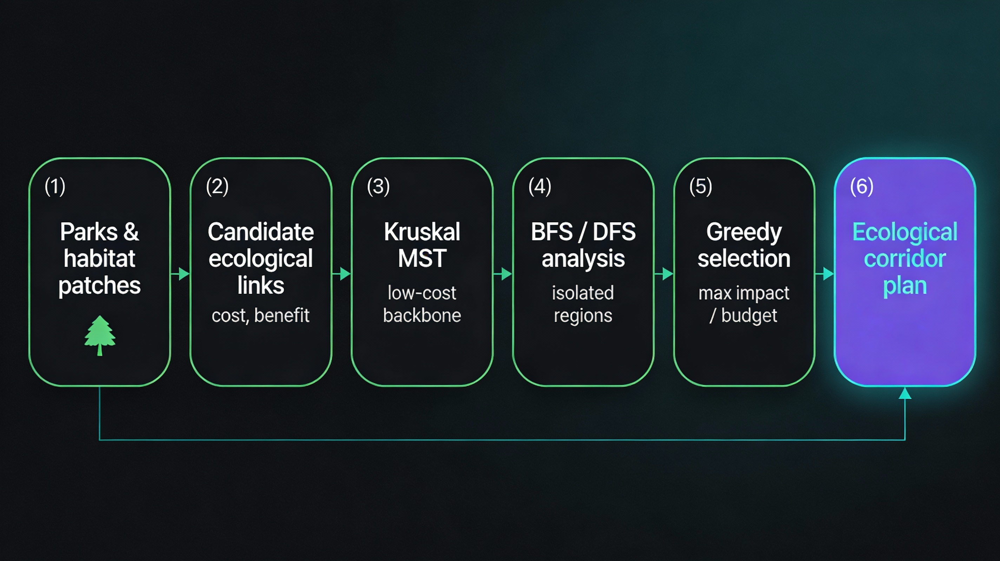
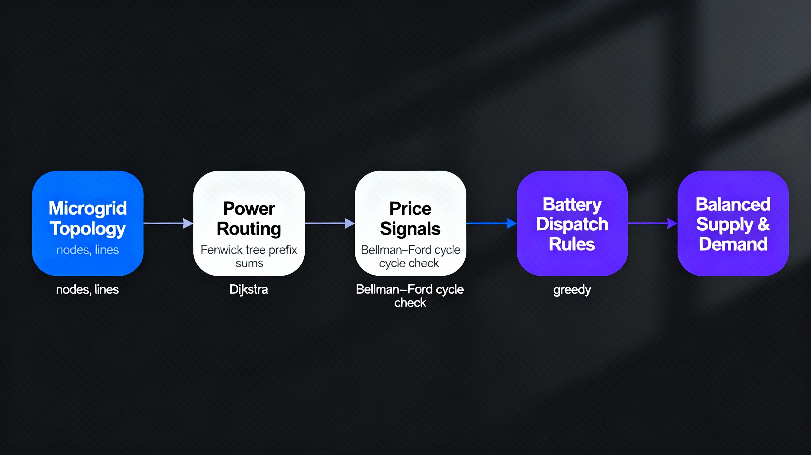
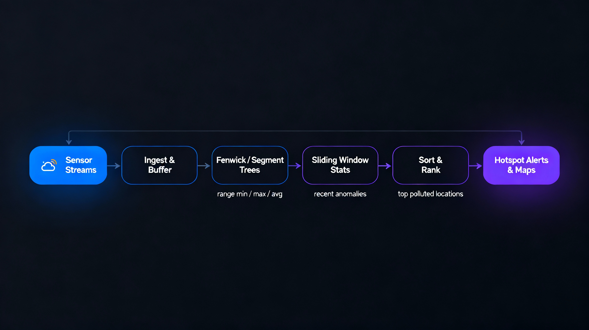

Case 1 · Renewable Energy Installation & Maintenance
Smart Grids · Energy Routing
Smart Renewable Grid Layout & Routing
Smart renewable networks require selecting optimal panel and turbine placements, minimising
cabling cost and routing electricity with minimal loss. Each building or energy node is
modeled as a weighted graph, where edges reflect cable distance and installation cost.
Minimum spanning tree construction gives a cost-efficient backbone that connects all nodes.
On top of this structure, shortest-path routing minimises energy loss and balances load
between generators and consumers, even when failures occur.
SDG 7 — Affordable and Clean Energy; SDG 9 — Industry, Innovation and Infrastructure; SDG 11 — Sustainable Cities and Communities; SDG 13 — Climate Action
Algorithms & Data Structures
- Kruskal’s and Prim’s MST for minimum wiring cost
- Dijkstra’s shortest path for low-loss routing
- BFS / DFS for connectivity and failure impact checks
- Sorting for cost-based edge and upgrade prioritisation

Case 2 · EV Charging, Rental & Repair Network
EV Infrastructure · Routing
City-Scale EV Charging & Service Optimisation
EV infrastructure is modeled as a weighted road graph where weights capture travel time,
energy usage and congestion. Shortest-path computations send drivers to the lowest-cost
station under current traffic. MST-style reasoning keeps installation and wiring costs low.
When a station fails, reachability and redundancy checks ensure every region still has
backup options. Sorted data structures and priority queues power fast station ranking and
vehicle-to-station assignment.
SDG 11 — Sustainable Cities and Communities; SDG 7 — Affordable and Clean Energy; SDG 9 — Industry, Innovation and Infrastructure; SDG 13 — Climate Action
Algorithms & Data Structures
- Kruskal / Prim MST for planning backbone infrastructure
- Dijkstra’s shortest path for driver-to-station routing
- BFS / DFS for reachability and redundancy metrics
- Priority queue–based dispatching for nearest “best” station
- Sorting to rank stations by distance, load and pricing

Case 3 · Waste Collection & Recycling Optimisation
Urban Logistics · Routing
Capacity-Aware Waste Collection Routing
Each pickup point is a node with attributes like waste volume, distance and urgency.
K-means clustering groups close-by points into service regions, reducing cross-region travel.
Inside each region, a near-optimal tour is built via a nearest neighbour TSP heuristic,
refined by 2-opt. Capacity constraints split long tours into feasible sub-routes for trucks.
When bins overflow or roads are blocked, affected segments are recomputed using updated edge
weights, not the entire city.
SDG 11 — Sustainable Cities and Communities; SDG 12 — Responsible Consumption and Production; SDG 3 — Good Health and Well-being; SDG 13 — Climate Action
Algorithms & Data Structures
- K-means clustering to form service regions
- Nearest neighbour TSP heuristic for initial tours
- 2-opt local optimisation for route improvement
- Dijkstra-based distance matrix for fast cost lookup
- Capacity-based route splitting for truck limits

Case 4 · Water Purification & Environmental Cleaning
Time-Series · Pattern Matching
Real-Time Water Quality Monitoring & Alerts
Distributed purification units generate continuous sensor streams, tracking contamination,
pressure and flow. A segment tree maintains dynamic range min/max values, enabling
instant detection of abnormal spikes. For historical audits, a sparse table answers static
range queries in O(1) time. Text-based incident reports are scanned using KMP pattern
matching so critical contamination keywords are found in linear time.
SDG 6 — Clean Water and Sanitation; SDG 3 — Good Health and Well-being; SDG 11 — Sustainable Cities and Communities; SDG 14 — Life Below Water
Algorithms & Data Structures
- Segment tree for dynamic range min/max on sensor data
- Sparse table for O(1) static range queries in reports
- KMP pattern matching for scanning incident documents
- Sorting for event and log ordering
Case 5 · Urban Farming & Organic Food Systems
Agritech · Analytics
Data-Driven Irrigation & Yield Management
Sensor networks across rooftop and vertical farms record soil moisture, growth and microclimate
metrics. Fenwick trees handle high-frequency updates while providing fast rolling sums and
averages for dashboards. Segment trees track min/max growth rates or stress indicators.
K-means clustering groups similar plots into zones with shared irrigation and nutrient plans,
while sorting highlights high-yield and underperforming plots for targeted action.
SDG 2 — Zero Hunger; SDG 11 — Sustainable Cities and Communities; SDG 12 — Responsible Consumption and Production; SDG 15 — Life on Land
Algorithms & Data Structures
- Fenwick tree for rolling yield and moisture aggregation
- Segment tree for detailed growth and threshold tracking
- Sorting to prioritise high- and low-performing plots
- K-means clustering for farm zoning and scheduling
Case 6 · Green Landscaping & Ecological Restoration
Environment · Connectivity
Cost-Efficient Ecological Corridor Planning
Parks and green patches are modeled as nodes; potential ecological links are edges with
restoration cost and benefit. Kruskal’s MST gives a minimal-cost backbone that reconnects
fragmented habitats. BFS/DFS component analysis identifies isolated regions and their
priority. Under a city budget, a greedy benefit-to-cost strategy selects segments that
deliver maximum ecological impact per unit cost.
SDG 13 — Climate Action; SDG 15 — Life on Land; SDG 11 — Sustainable Cities and Communities; SDG 14 — Life Below Water
Algorithms & Data Structures
- Kruskal’s MST for low-cost corridor backbone
- BFS / DFS for component detection and isolation scoring
- Greedy selection based on benefit/cost ratio
- Sorting to rank candidate restoration edges

Case 7 · Drone-Based Environmental Monitoring
Aerial Monitoring · Routing
Battery-Constrained Drone Route Planning
Monitoring waypoints are treated as nodes with travel costs driven by distance and wind.
A nearest neighbour TSP heuristic builds an initial tour, which 2-opt then refines. Battery
limits require long tours to be segmented into multiple missions. Dijkstra’s algorithm
computes safe return paths to base or an alternate landing zone when conditions change
mid-flight due to weather or low battery.
SDG 13 — Climate Action; SDG 15 — Life on Land; SDG 11 — Sustainable Cities and Communities
Algorithms & Data Structures
- Nearest neighbour TSP heuristic for baseline tours
- 2-opt optimisation to reduce distance and energy use
- Dijkstra’s shortest path for emergency rerouting
- Tour segmentation based on battery constraints
Case 8 · Microgrid & Energy Storage Management
Power Systems · Scheduling
Hybrid Graph & Time-Series Storage Control
Microgrids are modeled as graphs where edges encode loss and line capacity. Power routing
uses Dijkstra to select low-loss paths. Time is discretised into slots; a Fenwick tree
tracks cumulative charge/discharge so supply can be compared to demand using prefix queries.
Bellman–Ford detects negative-cost cycles in dynamic pricing, revealing arbitrage or errors.
Greedy rules choose which battery to discharge during peak load periods.
SDG 7 — Affordable and Clean Energy; SDG 9 — Industry, Innovation and Infrastructure; SDG 13 — Climate Action; SDG 11 — Sustainable Cities and Communities
Algorithms & Data Structures
- Dijkstra’s shortest path for microgrid power routing
- Fenwick tree for time-series storage scheduling
- Bellman–Ford for negative-cost cycle detection
- Greedy load assignment during peak demand

Case 9 · Pollution Monitoring & Environmental Analytics
Streaming Data · Hotspots
Streaming Analytics for Pollution Hotspots
A dense sensor network continuously reports air-quality data. Fenwick and segment trees
allow fast range queries (min, max, average) over time windows, even as new readings are
appended. Sliding-window statistics detect short-term anomalies. Sorting ranks locations by
pollutant level, enabling instant hotspot visualisation and targeted interventions.
SDG 3 — Good Health and Well-being; SDG 11 — Sustainable Cities and Communities; SDG 13 — Climate Action
Algorithms & Data Structures
- Fenwick tree and segment tree for range aggregates
- Sliding-window methods for outlier detection
- Sorting for ranking top polluted locations

Case 10 · Waste-to-Energy & Biofuel Optimisation
Operations · Scheduling
Feedstock Batching & Digester Scheduling
Heterogeneous waste streams are batched for digesters under capacity constraints. A greedy
knapsack approximation sorts items by energy density and builds near-optimal batches.
Logistics from waste sources to the plant are routed using Dijkstra to minimise transport
cost. Inside the plant, a segment tree monitors time-slot capacities so no digester is
overloaded while daily throughput is maximised.
SDG 12 — Responsible Consumption and Production; SDG 7 — Affordable and Clean Energy; SDG 13 — Climate Action
Algorithms & Data Structures
- Greedy knapsack approximation using energy density
- Sorting to order feedstock by priority
- Dijkstra’s shortest path for transport optimisation
- Segment tree for time-slot capacity checks
No case studies match your current search. Try another keyword or clear the filter.